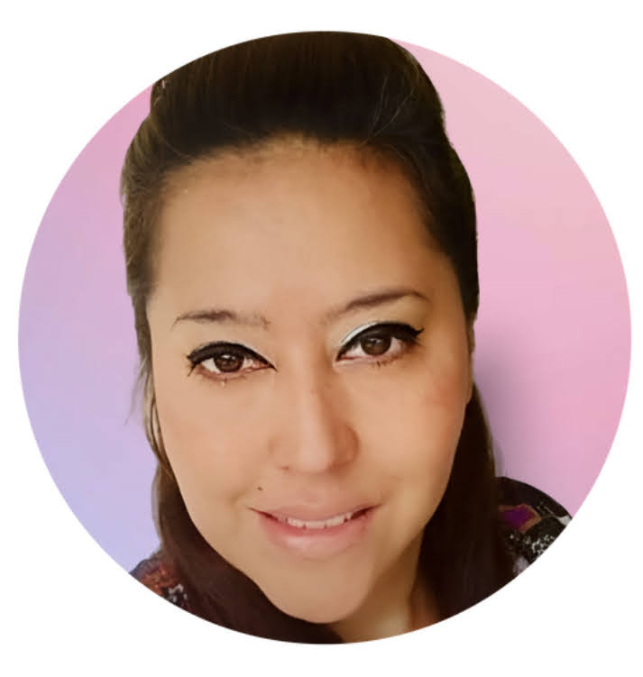

Maria Fernanda Carrillo Colina| WDD 130
Hello! My name is Maria Fernanda Carrillo Colina, I am from Caracas, Venezuela but I live in Mexico. Defining ourselves in a few lines is never easy, but here is a glimpse into who I am. I am a proud Venezuelan mother and wife who found a calling in life: helping people in distress through the practice of law. For over 25 years, I have served others with a deep sense of purpose and compassion. Curious by nature, I have always loved exploring and learning. As a child, I dreamed of discovering ancient civilizations and distant planets, passions that led me to wonderful experiences like being a Girl Scout. I enjoy asking questions, imagining new ideas, and building or fixing things around the house. Growing up as part of Generation X, I feel lucky to have lived in a world both before and after the internet. I love my family dearly — they are my shield, my heart, and my greatest blessing. I love God, seek justice, and strive daily to become a better version of myself. Despite life's hardships, my faith and family give me strength to keep moving forward. Today, I am eager to deepen my understanding of technology and explore how it can be used to help others and make a positive difference in the world.